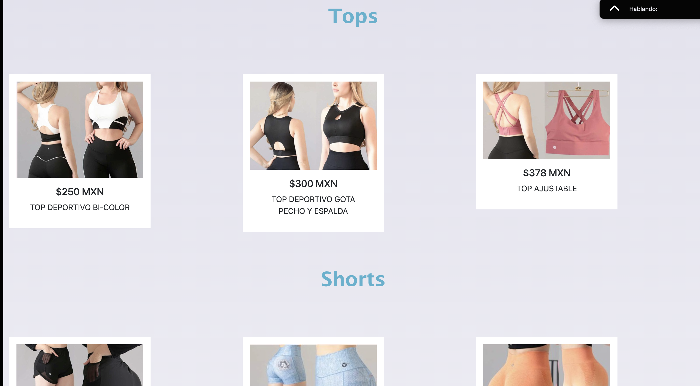

I'm Ana Paola Elizondo Salas
FullStack Developer
My Projects
WhiteLotus E-commerce

I developed White Lotus, a flower e-commerce platform that redefines how customers purchase floral arrangements. Unlike traditional florists with fixed catalogs, our platform allows users to design unique arrangements in real time, choosing flowers, colors, and styles to match their preferences. Built using Java, Spring Boot, MySQL, HTML, CSS3, and JavaScript, ensuring seamless backend-frontend integration. Designed and managed MySQL/PostgreSQL databases, optimizing data persistence and security. Worked in an Agile SCRUM environment, coordinating tasks via Jira/Trello and using Git/GitHub for version control. Developed a responsive UI to enhance user experience across devices, leveraging Figma, Canva, and Illustrator for visual design.
Xian Collection Catalog
I developed Xian Collection Catalog, a modern and elegant one-page sportswear catalog designed for women. This project showcases clothing pieces in a clean, structured, and user-friendly layout, ensuring an intuitive shopping experience. Built using HTML, CSS, JavaScript, and Bootstrap, creating a responsive and visually appealing design. Focused on clear navigation and well-organized sections, providing a seamless browsing experience. Designed with relaxing colors and intuitive UI elements to enhance user engagement. Inspired by a real retail catalog, aiming to reflect the brand's commitment to quality, innovation, and female empowerment.